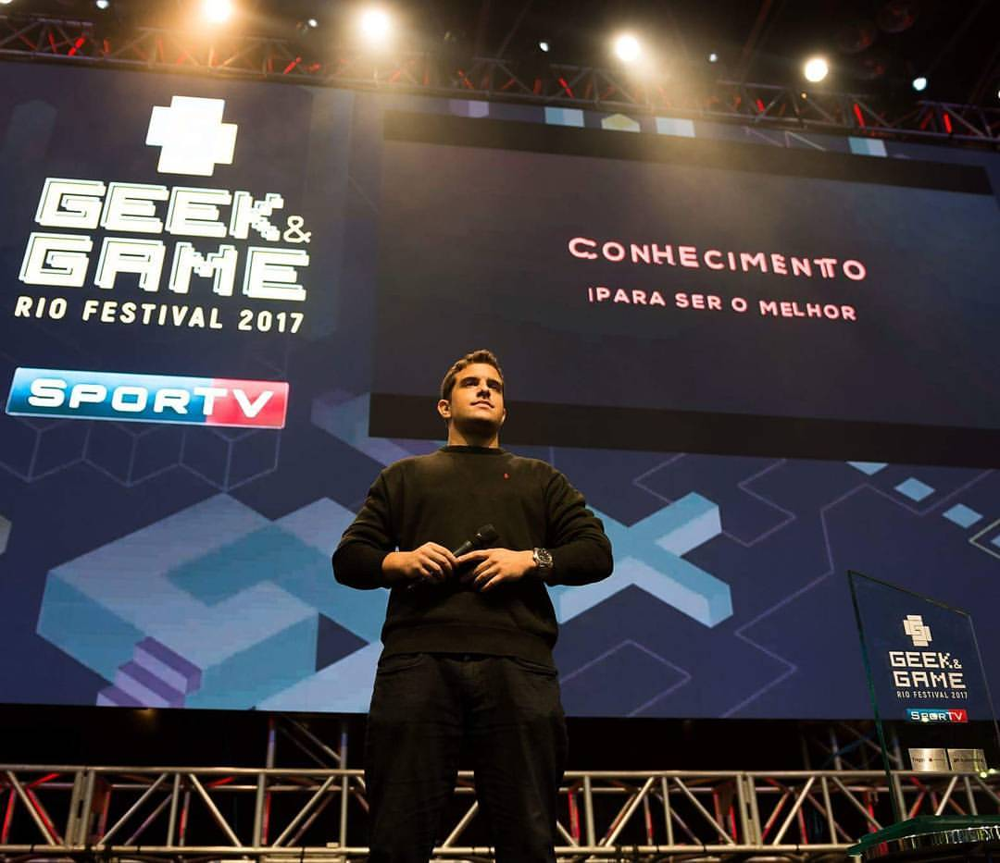
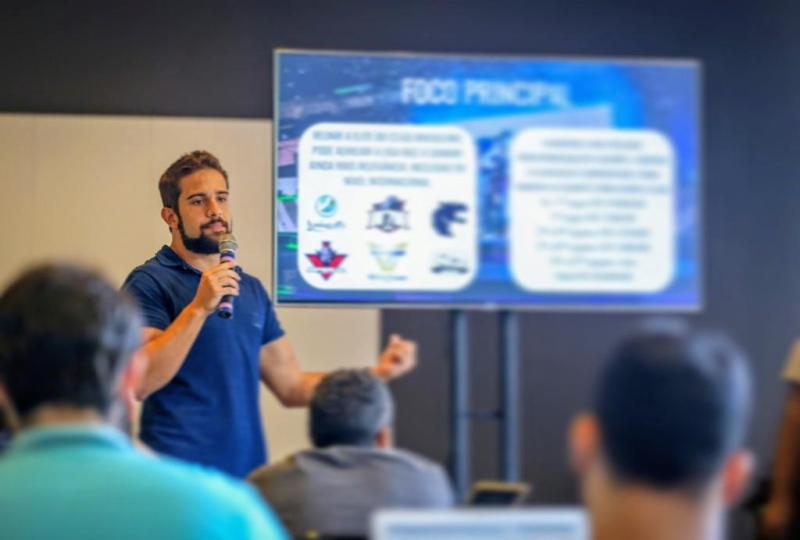

Parcerias com contexto
Prospecção e negociação de acordos, relacionamento com afiliados e influenciadores e planejamento de entregas alinhadas à estratégia regional.
Parcerias · Growth · Esports · iGaming
Sou Luigi Mataratzis, também conhecido como Kaov. Minha trajetória começou dentro dos esports e evoluiu para a construção de parcerias, projetos e negócios nos mercados de games e iGaming.

Uma visão construída na prática
Conhecer a audiência por dentro muda a forma de construir negócios com ela.
Antes de negociar parcerias e desenvolver projetos, vivi o cenário competitivo como jogador profissional de League of Legends. Depois, trabalhei como narrador, apresentador e produtor, acompanhando de perto a relação entre comunidades, conteúdo e marcas.
Essa experiência se tornou a base de uma atuação que reúne desenvolvimento comercial, gestão de afiliados e operações. Hoje, na Flutter International, atuo com os afiliados da Betfair no Brasil, conectando prospecção, negociação e relacionamento às necessidades do mercado.
Prospecção e negociação de acordos, relacionamento com afiliados e influenciadores e planejamento de entregas alinhadas à estratégia regional.
Experiência na criação de produtos, coordenação de equipes e fornecedores, definição de prioridades e acompanhamento de indicadores.
Vivência em transmissões, entrevistas, palcos e produção de conteúdo, com repertório sobre a linguagem e a dinâmica dos esports.
Experiências em foco
Três frentes que mostram como minha experiência se conecta: desenvolver relações, transformar ideias em projetos e aproximar marcas de suas comunidades.
01 / AFILIADOS E CRESCIMENTO
Na Flutter, gerencio afiliados da Betfair no Brasil, com rotinas de prospecção, negociação de condições comerciais e alinhamento à estratégia e ao orçamento regional.
Essa atuação inclui orientação a parceiros sobre regras de compliance, parametrização de links .bet.br e revisão de conteúdo entregue. Na Rivalry, trabalhei com aquisição e gestão de parceiros e, depois, com os esforços de crescimento da operação brasileira.
Na Rivalry, minha carteira de parceiros incluiu nomes como Ilha das Lendas, Baiano, Esa, Jukes, FNX e Mais Esports, entre outros profissionais e comunidades do setor.
02 / CRIAÇÃO E OPERAÇÕES
Como fundador e COO, liderei Marketing, Artes e Operações na concepção e execução de seis produtos. O trabalho envolveu análise de KPIs, definição de OKRs e organização de backlogs orientados a resultados.
Também participei do fechamento de acordos com marcas como Outback, Banco do Brasil, Claro TV, Redragon, JBL, Dazz, AOC, Microcamp, TP-Link e Corsair.
03 / PALCO, CONTEÚDO E MARCAS
Atuei como jogador profissional, narrador, apresentador e produtor. Na Brasil Game Show, minha experiência reuniu apresentação da BGC / BGS Esports, liderança de esports e atuação comercial.
Como Head of Esports, trabalhei no desenvolvimento de projetos e campeonatos, roteiros de TV e streaming, ativações de marca e coordenação de fornecedores, equipes e patrocinadores. Na área comercial, atuei com prospecção, propostas e relacionamento com empresas de dentro e de fora do setor de games.

Trajetória profissional
Uma jornada que reúne experiência de audiência, produção, operação e desenvolvimento de negócios. Algumas atuações ocorreram em paralelo, em projetos e contratos distintos.
Flutter International
Gestão de afiliados no Brasil, prospecção e negociação comercial, orientação de parceiros e adequação dos fluxos ao contexto regulatório do mercado.
Rivalry.com
Evolução de Esports Affiliates & Partnerships Manager para Growth Manager, combinando relacionamento com parceiros e estratégia de crescimento no Brasil.
Growth Manager · jan. 2023 — ago. 2024: acompanhamento de lançamentos de produtos e campanhas, projetos especiais e anúncios com parceiros na região brasileira.
Esports Affiliates & Partnerships Manager · ago. 2021 — jan. 2023: aquisição de parceiros e afiliados, gestão de acordos e desenvolvimento da estratégia de conteúdo e entregas.
Gaming Culture
Criação e operação de produtos, liderança de Marketing, Artes e Operações e desenvolvimento de acordos com marcas.
Brasil Game Show / BGC
Atuação na apresentação de campeonatos, coordenação do palco e desenvolvimento comercial, em funções distintas ao longo do período.
Sales Account Executive · fev. 2019 — abr. 2020: prospecção, propostas, análise de KPIs e relacionamento com decisores, reportando diretamente ao CEO.
Head of Esports · jul. 2018 — fev. 2019: projetos, roteiros de transmissão, campeonatos, ativações de marca e coordenação de operação.
Desk Host & Commentator · ago. 2016 — abr. 2020: apresentador e comentarista da Brasil Game Cup, posteriormente BGS Esports.
Riot Games · ESL · Esporte Interativo · Game XP · RedeTV!
Da participação no cenário profissional de League of Legends à apresentação de campeonatos e produção de conteúdo para TV e internet.
Riot Games: jogador profissional (jul. 2013 — out. 2015) e apresentador/comentarista contratado (mar. 2015 — jul. 2016).
ESL · mai. 2013 — out. 2016: comentários em campeonatos e entrevistas com atletas no cenário de esports.
Esporte Interativo · mai. 2016 — out. 2017: apresentação, comentários e produção de conteúdo de esports para TV e internet.
Game XP · set. — out. 2017: apresentação e comentários de showmatches de CS:GO no Rock in Rio, ao lado de Gabriel Medina e Gordox.
RedeTV! · set. 2015: comentarista de League of Legends no programa RedeTV E-Games, em parceria com GruntarTV.
Belmond Copacabana Palace
Recepção, check-in, apresentação das instalações e orientação aos hóspedes, com atenção à experiência de atendimento.
Formação
Universidade Estácio de Sá · 2011 — 2015
Base acadêmica
Ensino Médio · 1998 — 2011
Encontros que aproximam
Participar dos encontros do setor é uma oportunidade de ouvir parceiros, trocar perspectivas e construir relações que acompanham o desenvolvimento dos negócios.
São Paulo · 2026
Registros da participação com profissionais e parceiros do setor. No relato publicado no LinkedIn, destaquei a importância da qualidade e das parcerias duradouras para um crescimento sustentável.
Fotos da publicação de Luigi no LinkedIn. Selecione uma imagem para ampliar. Ver publicação original ↗
Vamos conversar
Para conexões profissionais, projetos e oportunidades em parcerias, esports, games e iGaming.